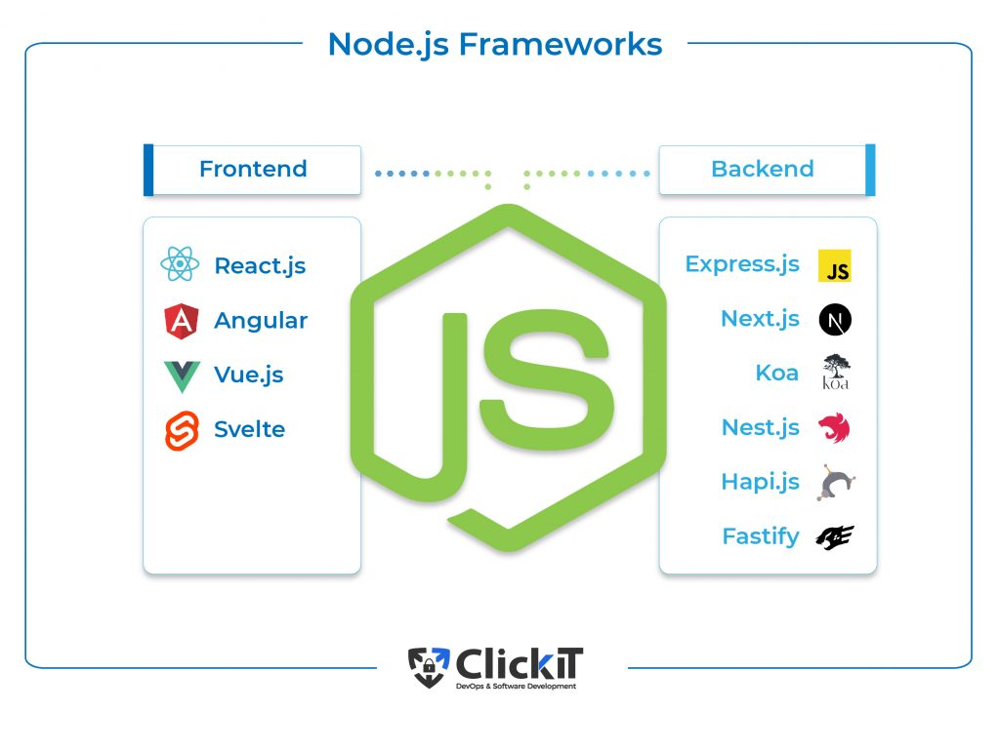

Mentoria passo a passo, segue abaixo
-
1. Introdução a algoritmos
A capacidade de pensar de maneira lógica é um dos principais diferenciais para saber como resolver problemas, principalmente na área da computação.
Diretamente relacionado a isso, compreender o conceito de algoritmo também é algo fundamental.
Com isso em mente, caso seu objetivo seja se tornar um bom programador, o próximo passo é aprender um pseudocódigo (Portugol, por exemplo),
no qual você entrará em contato com detalhes como entrada e saída de dados, assim como o processamento propriamente dito.
Neste módulo de aulas você terá acesso a isso, com o mestre Gustavo Guanabara e ótimas atividades! -
2. Entendendo HTML - primeiro passo
A Linguagem de Marcação de Hipertexto (HTML) é uma linguagem de computador que compõe a maior parte das páginas da internet e dos aplicativos.
Um hipertexto é um texto usado para fazer referência a outros textos, enquanto uma linguagem de marcação é composta por uma série de marcações
que dizem para os servidores da web qual é o estilo e a estrutura de um documento.
O HTML não é considerado uma linguagem de programação, já que ele não pode criar funcionalidades dinâmicas.
Ao invés disso, com o HTML, os usuários podem criar e estruturar seções, parágrafos e links usando elementos, tags e atributos.
Nestes módulos de aulas você terá acesso a todo experiência e formas de utilização do HTML,
formando uma ótima base para o início em todas as demais linguagens. -
3. Iniciando com CSS - iniciando a estilização
CSS é a sigla para o termo em inglês Cascading Style Sheets que, traduzido para o português, significa Folha de Estilo em Cascatas, muito utilizado.
O CSS é fácil de aprender e entender e é facilmente utilizado com as linguagens de marcação HTML ou XHTML. -
4. Conhecendo o Back-end
O PHP é uma linguagem de programação amplamente utilizada para desenvolvimento de sites dinâmicos e sistemas web.
Nesse curso, Guanabara, um dos professores mais conhecidos na área de tecnologia no Brasil,
explica os fundamentos do back-end usando PHP de forma prática e acessível.
Ao longo das aulas, os alunos aprendem desde conceitos básicos de programação até estruturas
e funções mais avançadas, como manipulação de banco de dados, criação de formulários e autenticação de usuários.
O curso é ideal tanto para iniciantes que querem dar os primeiros passos no mundo do desenvolvimento web quanto para os que desejam expandir suas habilidades. -
5. Integrando Front-end e Back-end (CRUD)
A integração de front-end e back-end com CRUD é fundamental para o desenvolvimento de aplicações web dinâmicas e funcionais.
CRUD é um acrônimo para Create (Criar), Read (Ler), Update (Atualizar) e Delete (Excluir),
que são as operações básicas realizadas em dados em quase toda aplicação.
Quando falamos em integração de front-end e back-end com CRUD, estamos abordando a comunicação
entre a interface do usuário (geralmente HTML, CSS e JavaScript) e o servidor,
onde a lógica de negócio e o banco de dados são gerenciados.
Essa integração permite criar aplicações web completas e responsivas,
onde o usuário pode inserir, visualizar, editar e excluir dados em tempo real.
Além disso, entender como funciona essa comunicação é essencial para qualquer desenvolvedor
que deseja construir sistemas interativos, como blogs, e-commerces, sistemas de gestão e outros aplicativos que manipulam dados de maneira contínua. -

6. Escolhendo sua especialização
React -> Componentização: facilita a criação de componentes reutilizáveis, o que melhora a organização e a manutenção do código.
Ecossistema Extensivo: integração com diversas bibliotecas e ferramentas,
como Redux para gerenciamento de estado e Next.js para renderização no lado do servidor.
Grande Comunidade: vasto suporte e uma comunidade ativa, com muitos recursos e tutoriais disponíveis.
Vue.js -> Flexibilidade: permite uma integração gradual em projetos e
oferece a capacidade de escalar de simples bibliotecas até SPAs completas.
Documentação Acessível: conhecida por uma documentação completa e acessível, ideal para desenvolvedores iniciantes e intermediários.
Alta Performance: devido ao seu tamanho leve, oferece desempenho rápido.
Angular -> Estrutura Completa: possui uma abordagem estruturada para criação de aplicações, com ferramentas integradas para formulários, roteamento e validação.
Escalabilidade: ideal para projetos que vão crescer com o tempo e precisam de uma estrutura de componentes e módulos organizados.
Ferramentas Corporativas: amplamente usado em grandes empresas que exigem um ambiente de desenvolvimento robusto e escalável.
NodeJS com Express -> Velocidade e Eficiência: suporta operações de I/O assíncronas, sendo ideal para aplicações em tempo real.
Grande Ecossistema: acesso a milhares de pacotes via npm, possibilitando integração com diversas ferramentas e bibliotecas.
Compatibilidade com Front-End em JS: permite usar JavaScript em todo o projeto, facilitando a colaboração entre front-end e back-end.
Django(Python) -> Estrutura Completa: inclui recursos como autenticação, ORM, administração e sistema de templates.
Segurança: possui práticas de segurança embutidas, ajudando a proteger contra ataques comuns, como SQL Injection e XSS.
Comunidade Ampla: grande comunidade e um repositório extenso de pacotes que permitem adicionar funcionalidades com facilidade.
Ruby -> Rápido para Prototipagem: permite lançar versões iniciais de forma rápida, o que é ideal para startups e MVPs.
Estrutura Consistente: segue o princípio "convention over configuration" (convenção ao invés de configuração), acelerando o desenvolvimento.
Comunidade Ativa: possui uma grande comunidade e uma ampla gama de plugins que tornam o desenvolvimento mais ágil.